¿En qué consiste el proyecto?
¡Participa en la democracia!
"Tu Voto, Tu Voz" es un proyecto de educación cívica que busca informar detalladamente sobre los candidatos a las elecciones subnacionales en el municipio de La Paz, mostrando sus planes de gobierno y principales propuestas.
El proyecto está gestionando visitas a Unidades Educativas, cada una con una población de más de 600 estudiantes, donde los jóvenes de 6to de secundaria votarán por primera vez, con el fin de brindando información necesaria para que cumplan con el deber ciudadano de forma informada.
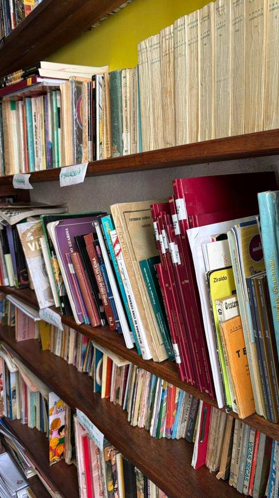
🎓 Capacitaciones
Acciones de movilización con colegios para realizar encuestas-diagnóstico sobre las propuestas de cada partido político.
🗳️ Simulacros de Votación
Conformación de equipos de apoyo para realizar simulacros de votación con papeletas de sufragio reales.
📱 Blog Informativo
Creación de una base de datos donde la ciudadanía pueda encontrar toda la información de los candidatos.
🎬 Videos Informativos
Producción de vídeos para redes sociales explicando la importancia del voto informado y responsable.
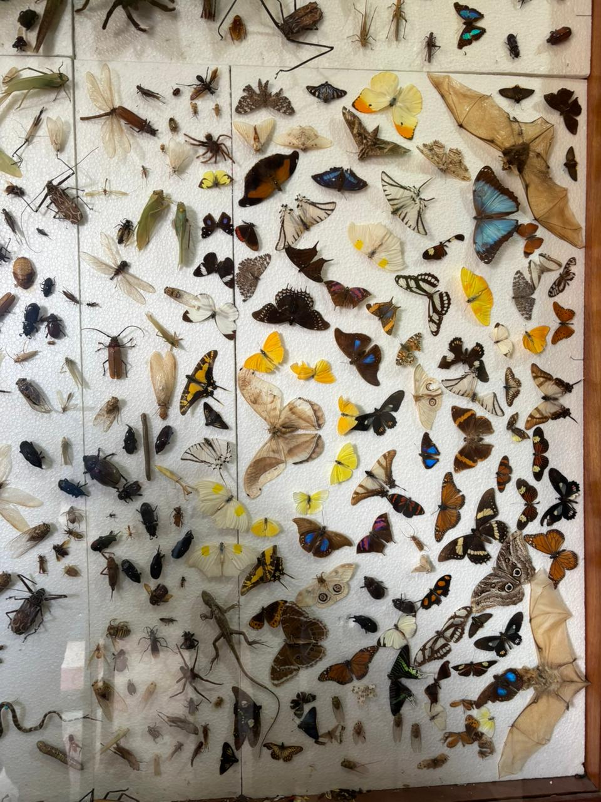
🎯 Objetivos y Resultados Esperados
Visitar Unidades Educativas
Realización de encuestas-diagnóstico que permitirán cercanía, atención e interés por el proceso electoral y la responsabilidad del voto.
Simulacro Vivencial de Votación
Los estudiantes podrán informarse de cada candidato y partido, conocer la papeleta y administrar la conciencia de voto.
Blog Informativo
Creación de un blog abierto con toda la información electoral que responda a principios de información, cultura de paz y valores democráticos.
Material Audiovisual
Producción de reels cortos con información verídica del proceso electoral, difundidos por redes sociales.

Candidatos a Alcaldía de La Paz

Miguel Antonio Roca Sánchez
ASLP

Jhonny Dario Plata Chalar
Jallala
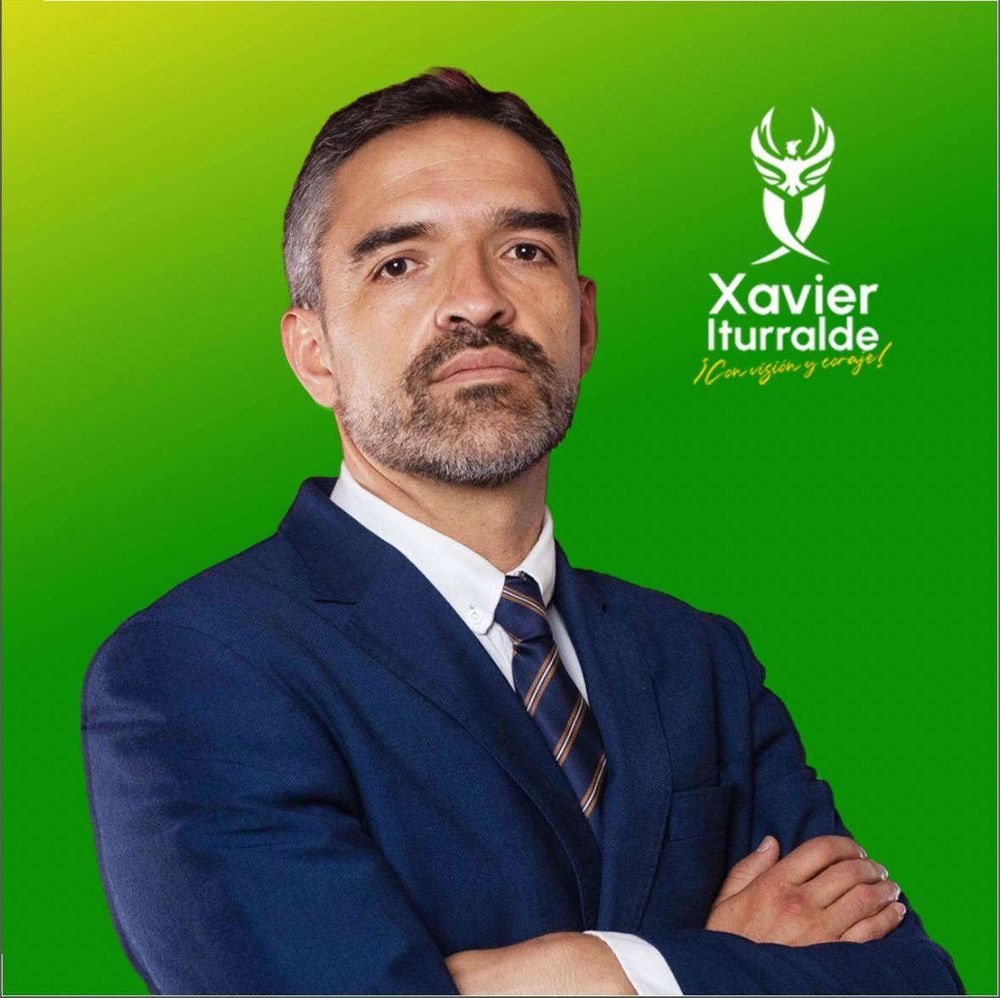
Francisco Xavier Iturralde Torrico
ASP

Waldo Albarracín Sánchez
Venceremos
Luis Eduardo Siles Pérez
Unión por el Cambio (UPC)
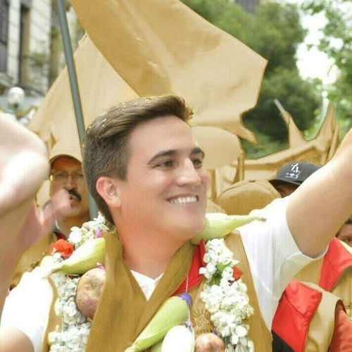
Carlos Eduardo Palenque Monroy
LIBRE

Felipe Fernández Cano
A-UPP

César Luis Dockweiler Suárez
Innovación Humana (IH)
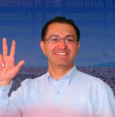
Fernando Henrry Valencia Aguilera
VIDA

Raúl Daza Quiroga
Frente Revolucionario de Izquierda (FRI)
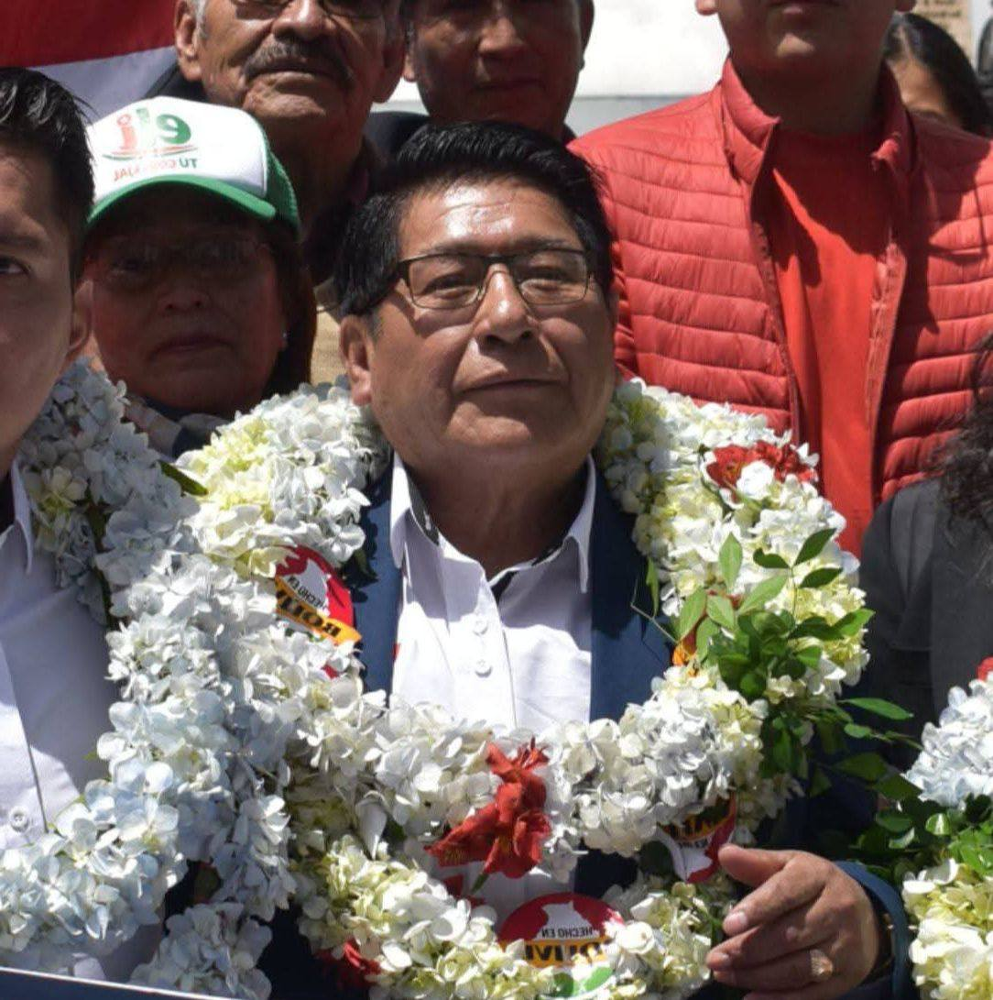
Mario Silva Coya
Partido Demócrata Cristiano (PDC)
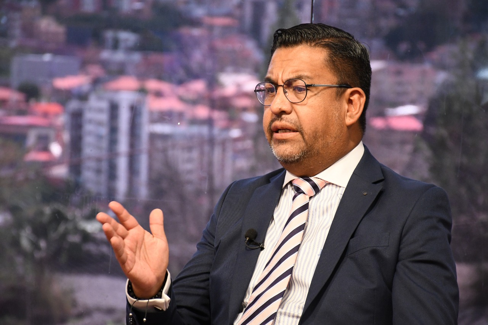
Jorge Dulón Fernández
Movimiento Tercer Sistema (MTS)
Hernán Rodrigo Rivera Nava
Nueva Generación Patriótica (NGP)

Oscar Manuel Sogliano Helguero
Autonomía para Bolivia Súmate (APB-Súmate)
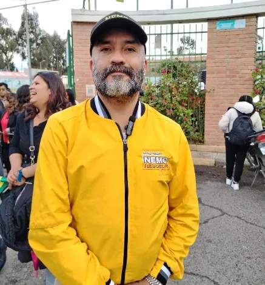
Carlos Nemo Rivero Auza
Alianza Patria La Paz
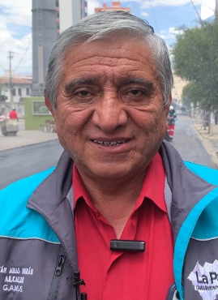
Hernán Iván Arias Durán
Suma por el Bien Común (SPBC)
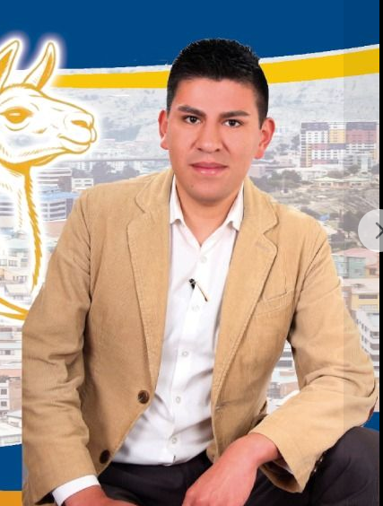
Ricardo Cuevas
Movimiento por la Soberanía (MPS)
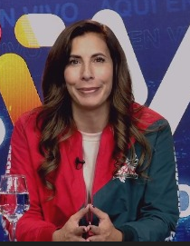
Roxana Pérez del Castillo
Alianza Recuperemos La Paz
Centro Cultural Don Bosco
🏛️ Institución Cultural de Derecho Privado sin Fines de Lucro
Más de 17 años de compromiso con la juventud Boliviana
🎨 Nuestra Misión
El Centro Cultural Don Bosco (CCDB) es una Institución Cultural de Derecho Privado sin fines de lucro, cuyo principal objetivo responde a: incentivar a los jóvenes a descubrir sus talentos y habilidades en las distintas disciplinas artísticas y profesionales.
Ofrece a la sociedad distintos servicios desde el voluntariado activo, cuyo aporte permite descubrir nuevas miradas de la realidad, siendo aspectos centrales de nuestra participación activa hacia el bien común.
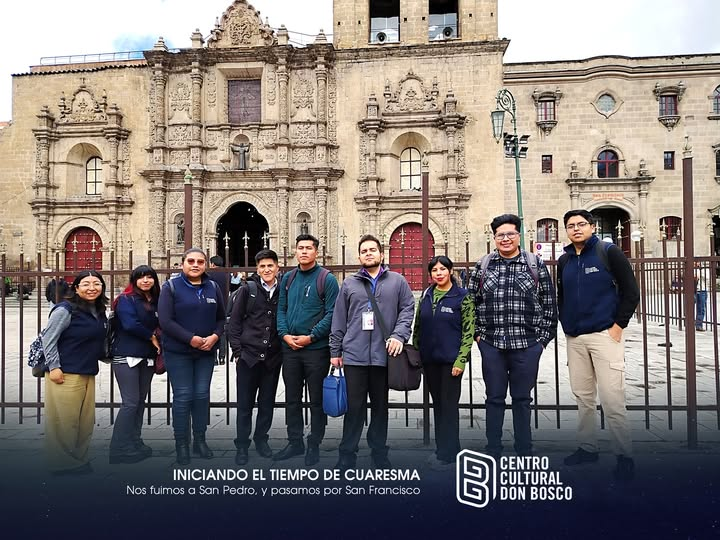
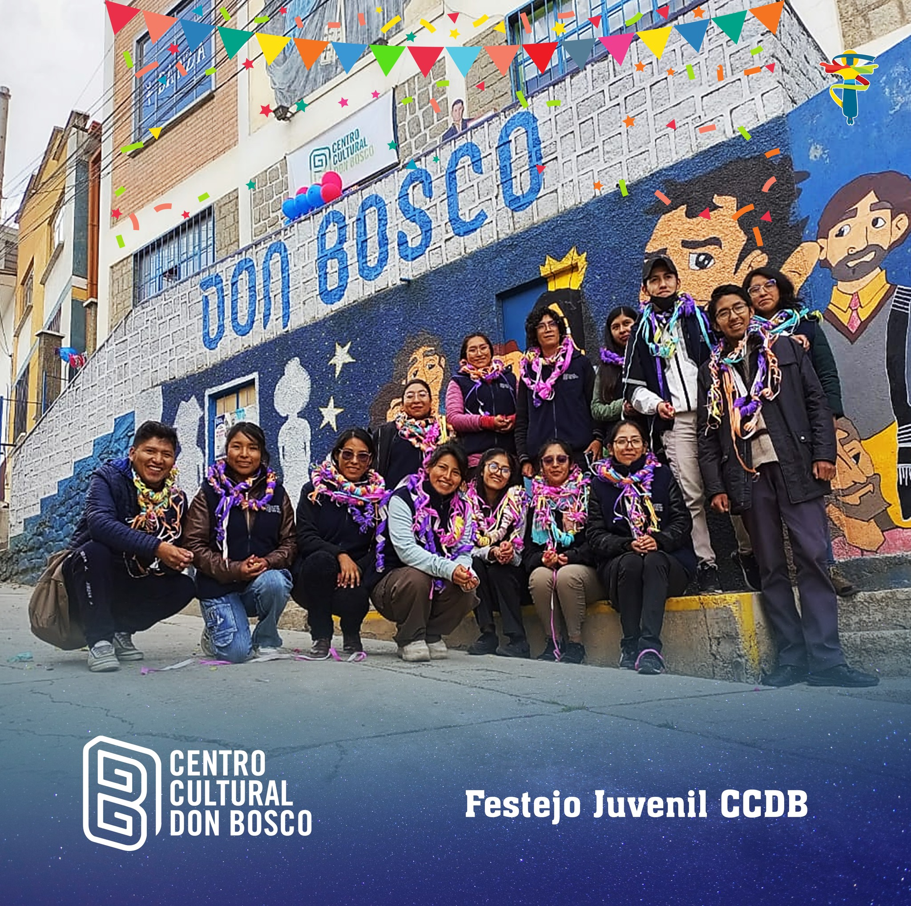
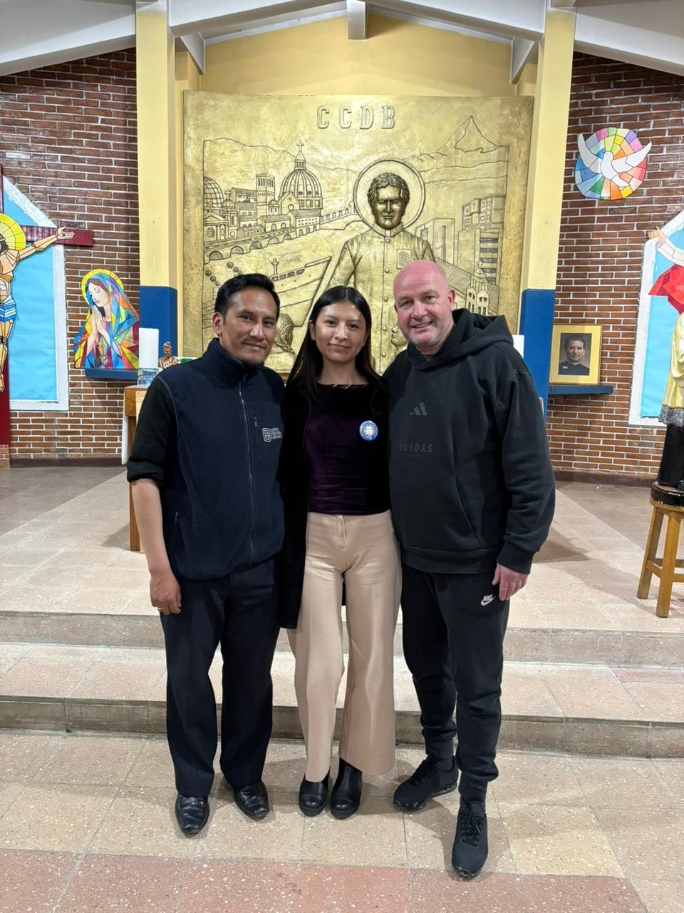
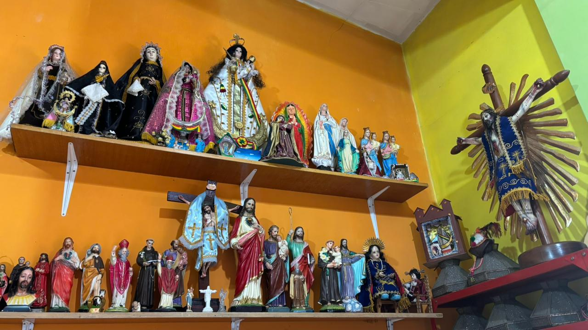
📚 Líneas de Trabajo
🎭 Educación Artística
Formación en artes escénicas, música, pintura y más
🌍 Extensión
Proyectos comunitarios y outreach social
🎪 Servicios Culturales
Eventos, conciertos y actividades abiertas
📖 Formación Multidisciplinaria
Programas educativos integrales
🙏 La Fórmula de Don Bosco
El CCDB vive la espiritualidad de San Juan Bosco, aplicando los pilares fundamentales:
Casa (Hogar)
El CCDB es el "segundo hogar" con un ambiente familiar y acogedor donde los jóvenes se sienten seguros, amados y cuidados.
Escuela (Formación)
Educación integral más allá de lo académico, incluyendo valores, habilidades prácticas y formación humana-cristiana.
Parroquia (Fe)
Espacio de encuentro con Dios, catequesis, sacramentos y vida espiritual.
Patio (Juego y Convivencia)
Lugar de alegría, deporte, amistad y creatividad.
🎭 Centro Cultural Don Bosco
Programa Educativo
Formación Integral
Programas de educación artística y formación multidisciplinaria para jóvenes.
Eventos Culturales
Actividades Abiertas
Organización de eventos culturales, conciertos y actividades abiertas a la comunidad.
Biblioteca y Recursos
Información
Acervo bibliográfico y recursos para la educación y formación de los jóvenes.
Voluntariado
Servicio Comunitario
Programa de voluntariado activo que incentiva el compromiso social.
🏆 Reconocimientos
- Premio Nacional al Voluntariado "Yanapiri" - Otorgado por la ONU Voluntarios, PNUD y Ministerio de Justicia
- Institución Destacada al Voluntariado - Otorgado por la Asamblea Legislativa Plurinacional de Bolivia
- Premio ConCausa2030 (representando a Bolivia) - Fundación Caserta, América Solidaria, UNICEF
- Reconocimientos del Ministerio de Turismo Sostenible, Culturas, Folklore y Gastronomía
- Reconocimientos de la Gobernación de La Paz
- Reconocimientos del Municipio de La Paz y SMCT
- Reconocimientos del Concejo Municipal de La Paz
- Reconocimientos de Fe y Alegría, Departamental La Paz
SolidarSuiza Bolivia
🤝 SolidarSuiza Bolivia
✨ Patrocinador del Proyecto "Tu Voto, Tu Voz" ✨
🌍 ¿Quiénes Somos?
SolidarSuiza es una organización de cooperación internacional que trabaja en Bolivia para promover el desarrollo sostenible y la justicia social. Con presencia en diversos países, unsere misión es apoyar a comunidades vulnerables a través de proyectos de capacitación, educación y fortalecimiento institucional.
🎯 Nuestra Misión
Trabajamos para reducir la pobreza y promover la inclusión social mediante programas de formación profesional, apoyo a emprendimientos locales, y proyectos de participación ciudadana. Creemos en el poder transformador de la educación y el conocimiento.
📋 Áreas de Trabajo
Nuestras líneas de acción incluyen:
- Desarrollo económico local y emprendimiento
- Educación y formación técnica
- Participación ciudadana y gobernanza
- Protección de derechos
- Gestión ambiental
🤝 Alianza con el Proyecto
SolidarSuiza es el patrocinador principal del proyecto "Tu Voto, Tu Voz", creemos firmemente en la importancia de la educación cívica y la participación informada de los jóvenes en los procesos democráticos. Este proyecto representa nuestro compromiso con el fortalecimiento de la democracia en Bolivia.
Nuestro Equipo
💪 Juntos por la Democracia
Un equipo comprometido con la educación cívica y el futuro de Bolivia. ¡Conoce a las personas que hacen posible este proyecto!
👥 Equipo Principal
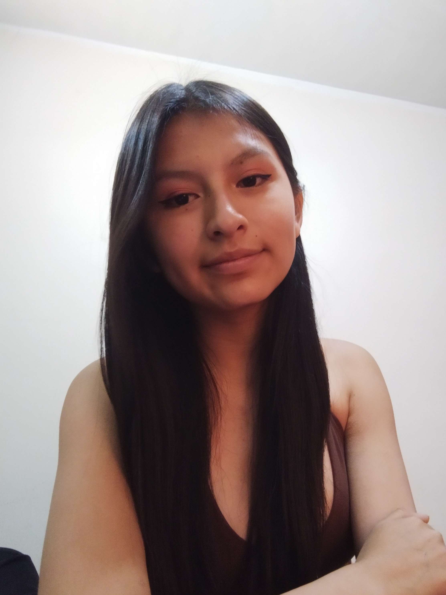
Galile Alison Llusco Asistiri
Desarrollador Web
Estudiante de Ingeniería de Sistemas. Apoyó en la creación y desarrollo de la página web del proyecto "Tu Voto, Tu Voz".
Equipo CCDB
Coordinación General
Coordinadores y voluntarios del Centro Cultural Don Bosco que hacen posible la ejecución del proyecto.
Equipo Educativo
Facilitadores
Profesionales dedicados a las capacitaciones y simulacros de votación en las Unidades Educativas.
Voluntarios CCDB
Voluntariado Activo
Jóvenes voluntarios comprometidos con la misión del Centro Cultural Don Bosco y el proyecto.